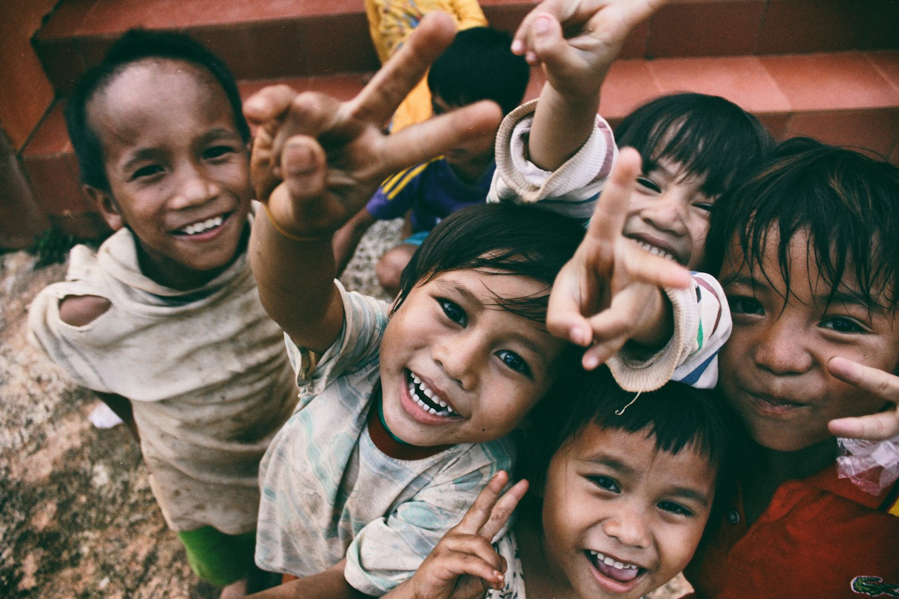
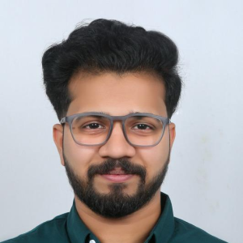
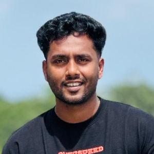
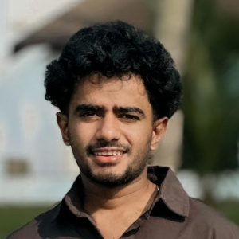
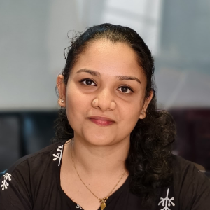
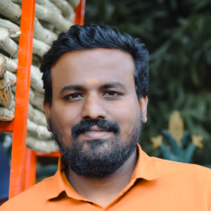
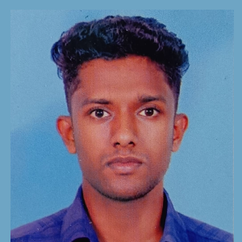
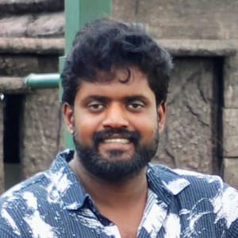

Saadat Trust
Building Dignity, Opportunity & Hope
Saadat is a social impact initiative committed to uplifting communities through education, healthcare, sustainability, empowerment, innovation and humanitarian action.
We believe meaningful change begins with compassion, equality and collective responsibility. Together, we strive to create opportunities, restore dignity and build a better future for all.

Our Vision
An equitable, compassionate and sustainable society.
To build a society where every individual has access to food, education, healthcare, dignity, opportunity and a healthy environment irrespective of caste, creed, gender or economic background.
Our Mission
Purpose led by action.
Zero Hunger
Eradicate hunger, poverty and malnutrition.
Good Health
Improve access to healthcare, sanitation and wellness.
Quality Education
Promote education, vocational skills and youth empowerment.
Gender Equality
Support women empowerment and gender equality.
Climate Action
Encourage environmental sustainability.
Sustainable Communities
Preserve cultural heritage, traditional arts and identity.
Reduced Inequalities
Support rural development and underserved communities.
Innovation
Foster innovation, entrepreneurship and research.
Well-Being
Promote sports, fitness and holistic youth development.
About Saadat
Community change with purpose, empathy and action.
Saadat was founded with a simple but powerful belief: lasting social change is possible when communities come together with purpose, empathy and action.
Saadat is a non-profit trust established by a group of socially committed individuals who share a common vision of building a more inclusive and progressive society. The trust focuses on addressing pressing social challenges including poverty, hunger, healthcare access, education, environmental sustainability, women empowerment and rural development.
Our work is driven by the principles of equality, dignity, compassion and sustainable impact. Through grassroots initiatives, partnerships, awareness programs and community engagement, we aim to create opportunities and improve the quality of life for underserved communities.
Saadat also believes in preserving cultural heritage, supporting innovation and entrepreneurship, promoting youth development through sports and contributing towards nation-building initiatives.
We aspire to become a platform where individuals, institutions and communities can collaborate to create meaningful and measurable social impact.
Our Focus Areas
Where Saadat creates impact.
Hunger & Poverty Eradication
Healthcare & Sanitation
Education & Skill Development
Women Empowerment & Gender Equality
Environmental Sustainability
Heritage, Art & Culture
Support for Armed Forces Families
Rural & Slum Development
Innovation & Entrepreneurship
Sports & Youth Development
Our Initiatives
Programs built for direct community support.
Community Food Support Program
Food access and relief support for vulnerable communities.
Health & Wellness Camps
Community healthcare, preventive wellness and sanitation awareness.
Education Assistance Program
Learning support, skills assistance and opportunity creation.
Women Empowerment Workshops
Programs that advance dignity, confidence and gender equality.
Green Community Initiative
Local action for sustainability and ecological responsibility.
Heritage & Cultural Promotion
Support for traditional arts, heritage and community identity.
Youth Sports Development
Fitness, teamwork and holistic youth development through sports.
Rural Outreach Projects
Grassroots engagement for rural and underserved communities.
Our Team
Led by trustees, advisors, volunteers and partners.
Saadat is led by a dedicated group of professionals, community leaders and volunteers committed to creating positive social impact.

Binny Varghese
Trustee & President

Adarsh Dileep
Trustee & Secretary

Muhammed Jaseem V K
Trustee & Treasurer

Pournami P M
Trustee

Nitheesh T G
Trustee

Akash Dileep
Trustee

Prajeet Prabhakaran
Trustee & Strategic Advisor
Advisors & Mentors
Experienced professionals and subject matter experts guiding the trust's initiatives and long-term mission.
Volunteers & Community Partners
Our volunteers and partners form the backbone of our initiatives, helping us reach communities and create sustainable change.